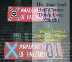

|
Stanford Review - Archive - Volume XXV - Issue 1
The New Cultural Orientation:
Whose Values Are Stanford Values?
"I pledge allegiance to the United States of America," student actors recited to listening freshmen in a series of different languages during "Trajectories," the latest addition to the New Student Orientation program lineup.
Along with "The Real World: Stanford" and "Faces of Community", the University intended "Trajectories: A History of Stanford" to introduce new students to Stanford values.
.....Full story in Front Page.....by Scott Rasmussen
Lawyers Discuss Internet Privacy and Government Regulation
In a surprisingly light-hearted discussion, four well-known lawyers and legal scholars - Richard Epstein, the Hon. Abraham Sofaer, Dorothy Glancy, and Ian Ballon - discussed Internet privacy and Internet law at a recent panel discussion on September 21st.
.....Full story in Front Page.....by Dave Myszewski
A Note From Bob
It's a new year, with new students, new issues, and a new volume. Fortunately, though time passes and circumstances change, some time-hallowed institutions remain as important as ever. The Review is one of them. For fourteen years, the Review has been a lone conservative voice on campus, telling truths others would choose just as well not to hear, seeing its criticisms of President Kennedy, the CIV program, and the speech code slowly but surely recognized and acted upon......Full story in A Note From Bob
Stanford's Very Own Confederate Flag:
The Xanadukes of Hazzard

Undoubtedly, it seemed like a good idea at the time.
Resident assistants (RA's) traditionally prepare dorms for new residents by, among other things, marking every door with its future residents' names and by putting a sign near the entrance with the dorm's name. According to a silly and generally harmless tradition, these name tags and the dorm sign must be jazzed up in some cheesy way to present a coherent dorm decoration theme. For this year, Xanadu chose to include the confederate flag in their theme.
.....Full story in News.....by Christopher Fish
Why is it so hard to get students excited about anything significant these days?
This year marks the first election cycle in recent memory where the election genuinely has yet to be decided in the beginning of October. So it is hardly a surprise that 52 million people were tuned into the television networks on the night of the first debate, as opposed to only 46.1 million for the debates in 1996, right?
.....Full story in Opinion.....by Chris Desmond
A Story Of Two Joes: Stalin and McCarthy
Can the cold war be viewed as a political battle between two distant superpowers, or was it a battle between two sets of beliefs about the nature of government, one morally superior to the other?
When CNN ran a mammoth twenty-four-episode documentary on the cold war, it at least suggested that many unsavory American actions were comparable to Soviet actions which were orders of magnitude worse. Perhaps the most surprising thing about Arnold Beichman's collection of articles on the topic is that it becomes a dispute, not over whether it is correct to equate the actions of the US and the USSR, but whether or not the video actually made such a comparison.
.....Full story in Book Review.....by Henry Towsner
Up Close And Personal With Rich Lowry
The Stanford Review: What have been the main shifts that National Review has experienced? How have things changed since William F. Buckley?
Mr. Lowry: In the early days, conservatism was still in a very inchoate phase where a lot of the ideas and emphases were still being fleshed out. So what Bill [Buckley] did was bring together a lot of conservative intellectuals who didn't agree on anything.
.....Full story in Interview.....by Henry Towsner
News Briefs
Take a look at recent events that have happened around campus and the political scene.....compiled by Mike Neruda
Upcoming Events
Take a look at upcoming events around Stanford.
Best of the Web
The Best of the Web takes a look at conservative Internet sites. This week we look at National Review Online.
Election Roundup
Catch up on what has happened recently in the presidential election.
Smoke Signals
The Chief congratulates the administration on the brilliant execution of its plan to close off the Foothills after Palo Alto refused to allow any development at all last spring. Let's hear what other people are saying about it:
The Last Page
Innocence Lost - Or - Days of Orientation.....by Alex Robbins
Page last modified on Wednesday, 01-Mar-2006 23:52:37 MST.
|